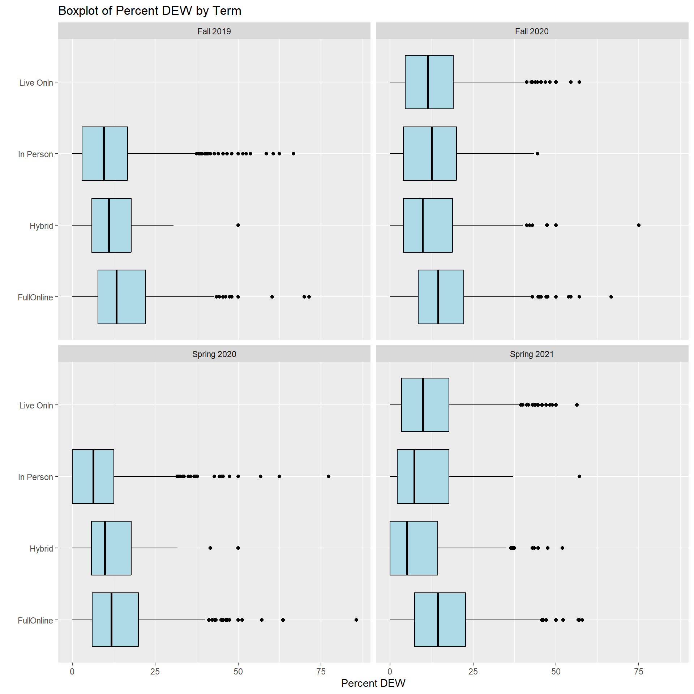

Load Libraries
suppressWarnings(library(tidyverse))
library(knitr)
library(lubridate)
library(ggplot2)
library(dplyr)Null Wranglers
In order to identify patterns or trends in the Grade Outcomes, we wanted to better understand the current anomalies in the data. We focused on trying to identify outliers that had a high value of poor grade outcomes. We decided to base this anomaly detection on the percentage of D, E, or W grades for a course. This decision was made so that high enrollment courses, such as English 101 with enrollment over 3500, would not further skew the data. We began by examining the quartiles for the D.E.W. Percentage.
Min. 1st Qu. Median Mean 3rd Qu. Max.
0.00 4.00 10.25 12.55 18.20 85.70 Here we verify that mean value is the 12.55% as we found in the initial EDA. We also see where the cut off values are for the quartiles. The first quartile or bottom 25% of the data are DEW percent values of less than 4%. The second quartile contains the DEW percents that range from 4% to 10.25%. The third quartile ranges from 10.25% to 18.2%. And the final quartile is all DEW percents of greater than 18.2%. This Histogram shows the distribution of these quartiles.
In the percentages of DEW for courses, we anticipated to see the data to be skewed to left as 75% of the data has a DEW percent is below 18.2%. This is clearly displayed in the above histogram. In the Histogram below we include only the top quartile of DEW percentages. This histogram allows us to more clearly see the frequency of DEW percentages over 30%.
# create new df of the top quartile
anomaly_25 <- anomaly_data %>%
filter(Percent.DEW>19)
ggplot(anomaly_25, aes(x = Percent.DEW)) +
geom_histogram(binwidth = 2, fill = "blue", color = "black", alpha = 0.8) +
labs(title = "Histogram of Only Top 25% of DEW Percent", x = "Percent DEW", y = "Frequency")The next step we took was to create box and whisker plots. The first plot seen below shows that the top 5 colleges DEW percentage. We can clearly see outliers for all colleges with the most outliers occurring in the College of Social and Behavioral Sciences.
Saving 7 x 5 in imageThe next plot shows how DEW Percentage for each mode for courses. The outliers seem to be evenly distributed across the types of different modes for courses and not isolated to a specific mode.

We confirmed this distribution by the below box and whisker plot that shows the mode by College. Once again the outliers are not isolated to a certain mode but fairly evenly distributed across the modes in all colleges.
After completing these bow plots, we decided to add a classification column that labeled any DEW percentage over 30% as High and all other percentages as Low. We determined this 30% cut off by using the box plots from above that showed outliers in all colleges and modes occurred above the 30% threshold. This creates a new data set with 528 observations. This mean that about 8% of courses from the original data are being considered for further analysis.
| College | Fall 2019 | Fall 2020 | Spring 2020 | Spring 2021 |
|---|---|---|---|---|
| College of Agric and Life Sci | 6 | 12 | 4 | 6 |
| College of Humanities | 25 | 27 | 23 | 45 |
| College of Science | 32 | 49 | 11 | 54 |
| College of Social & Behav Sci | 46 | 53 | 48 | 66 |
| Eller College of Management | 11 | 5 | NA | 5 |
This table shows that the most outliers defined as courses over 30% DEW percentage occurred in the College of Social and Behavioral Science. We can also see that the this college had the highest mean value in mean value in the data. The number of courses for this college and the College of Humanities stayed reasonable steady during the pandemic. However, we saw decreases in outliers for the rest of the colleges during the first semester of the pandemic followed by an increase to above pre-pandemic levels in the second semester. Most notably the College of Science dropped to just 11 High DEW percentage courses in the Spring of 2020 but spiked to 49 in the next semester. After reviewing this table, we decided to isolate the College of Social and Behavioral Sciences since the most occurrence of High DEW percentage courses. The below table shows the distribution of these courses in each department within this college.
high_soc <- high_risk %>% filter(College == "College of Social & Behav Sci")
high_total <- aggregate(DEW_Class~Department + TERM_LD, data=high_soc, sum)
high_total <- high_total %>% pivot_wider(names_from = TERM_LD, values_from = DEW_Class)
kable(high_total, caption = "Total High Risk Course for College of Social and Behavioral Sciences per Semester")| Department | Fall 2019 | Fall 2020 | Spring 2020 | Spring 2021 |
|---|---|---|---|---|
| AZ Center for Judaic Studies | 2 | NA | 2 | 3 |
| Communication | 1 | 1 | NA | NA |
| English | 3 | 1 | 3 | 6 |
| Gender and Womens Studies | 1 | 1 | NA | 2 |
| History | 8 | 10 | 15 | 12 |
| Linguistics | 3 | 7 | 2 | 6 |
| Mexican American Studies | 1 | NA | NA | NA |
| Philosophy | 5 | 9 | 8 | 6 |
| Sch Geography, Dev & Environ | 7 | 6 | 6 | 5 |
| School of Anthropology | 1 | 7 | 2 | 6 |
| School of Govt & Public Policy | 1 | 1 | 1 | 1 |
| School of Information | 6 | 4 | 4 | 6 |
| Social & Behavioral Sci Admin | 1 | NA | NA | NA |
| Sociology | 6 | 4 | 3 | 7 |
| Latin American Area Center | NA | 2 | 1 | 2 |
| Journalism | NA | NA | 1 | NA |
| Sch Middle E/N African Studies | NA | NA | NA | 4 |
This table shows that the departments of History and Philosophy consistently have the most numbers of High DEW percentage courses across the four semesters being analyzed.
high_soc <- high_risk %>% filter(College == "College of Social & Behav Sci")
high_total <- aggregate(DEW_Class~Department + Mode, data=high_soc, sum)
high_total <- high_total %>% pivot_wider(names_from = Mode, values_from = DEW_Class)
kable(high_total, caption = "Total High Risk Course for College of Social and Behavioral Sciences per Semester")| Department | FullOnline | Hybrid | In Person | Live Onln |
|---|---|---|---|---|
| AZ Center for Judaic Studies | 5 | 1 | 1 | NA |
| Communication | 1 | NA | 1 | NA |
| English | 9 | NA | 2 | 2 |
| Gender and Womens Studies | 4 | NA | NA | NA |
| History | 33 | 2 | 7 | 3 |
| Latin American Area Center | 4 | 1 | NA | NA |
| Linguistics | 12 | NA | 2 | 4 |
| Philosophy | 12 | 2 | 10 | 4 |
| Sch Geography, Dev & Environ | 7 | 3 | 9 | 5 |
| Sch Middle E/N African Studies | 2 | NA | NA | 2 |
| School of Anthropology | 5 | 1 | 2 | 8 |
| School of Govt & Public Policy | 1 | 1 | 1 | 1 |
| School of Information | 10 | NA | 6 | 4 |
| Sociology | 11 | 3 | 5 | 1 |
| Journalism | NA | NA | 1 | NA |
| Mexican American Studies | NA | NA | 1 | NA |
| Social & Behavioral Sci Admin | NA | NA | 1 | NA |
This table shows that most High DEW percentage courses are occurring in Fully Online courses. However, In Person courses in the departments of Philosophy and the School of Geography,Developmental, and Environmental Studies also showed comparable number of High DEW percentage courses to Fully Online courses. While the School of Anthropology saw their highest DEW percentage courses for the Live Online mode.